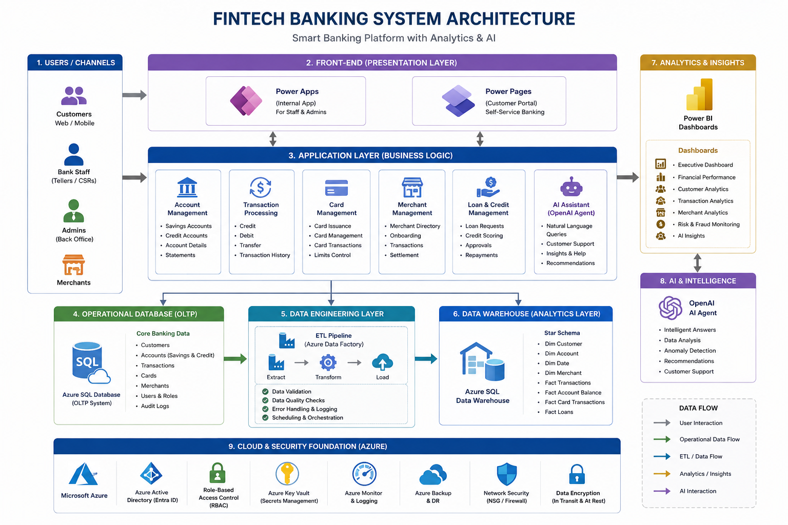
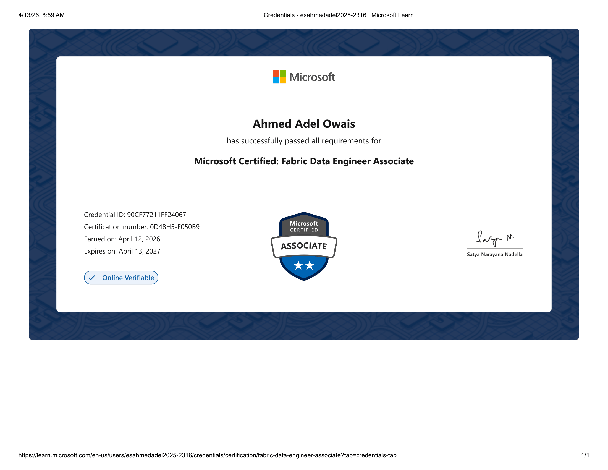

Fresh graduate · open to data & BI roles
Ahmed Adel
BI Developer · Data Analyst · Data Engineering
Electrical engineer turned Business Intelligence engineer. I build data models, ETL pipelines and Power BI reports that make business numbers clear and trustworthy.

About
I graduated with a Bachelor of Electrical Engineering from Alexandria University in 2025. Engineering taught me to work systematically and to check that results are correct, and I now apply that to data.
My path into BI came through training: a Microsoft Data Engineer track with DEPI, and a Power BI Development internship at ITI in Tanta, where I led my team's graduation project. I have also taken freelance Power BI work, fixing a client's data model and building a dashboard for a Saudi government entity.
I'm looking for an entry-level role as a Data Analyst, BI Developer, Power BI Developer or Junior Data Engineer, where I can keep growing across modeling, pipelines and reporting.
Skills
Databases & Warehousing
ETL & Data Engineering
Big Data & Cloud
Programming
Other
Projects
A short overview of each project. Full READMEs, screenshots and documentation are on GitHub.

Financial Data Platform & AI Analytics System
An end-to-end financial data platform, from warehouse to reports to an AI assistant.
- Designed a data warehouse and ETL pipelines with incremental loading
- Built an XGBoost loan risk model served through FastAPI on Azure
- Added a RAG assistant that turns natural language into SQL queries and visuals
- Created Power BI dashboards and SSRS reports

Egyptian Restaurant Analytics: Big Data
Revenue, sales and operations analysis over 11M+ rows (about 1.5 GB) of restaurant data from 2020 to 2025.
- Processed 7 CSV and 2 JSON sources with Spark and Delta Lake
- Structured the pipeline as Bronze, Silver and Gold layers ending in a star schema
- Built KPIs such as profit % and hourly trends in Spark SQL
- Delivered a Power BI dashboard using DAX

US Airline Delay Dashboard
Analysis of US Bureau of Transportation Statistics flight data to show the causes and patterns behind airline delays.
- Cleaned the raw data in a 12-step Python notebook pipeline
- Modeled it as a star schema
- Built an interactive Power BI dashboard covering overview, delay causes, airlines, routes and airports

Modern Data Warehouse (Medallion Architecture)
A hands-on warehouse built while following Baraa's Udemy data warehousing course, from raw ingestion to analytical reporting.
- Built Bronze, Silver and Gold layers with SQL scripts
- Created a star schema of dimensions and a fact table
- Wrote exploratory SQL analytics and a Power BI report

Gravity Books Data Warehouse
A data warehouse that turns transactional bookstore data into an analysis-ready model.
- Designed 9 dimensions and 2 fact tables using Kimball methodology
- Transformed OLTP data into a Galaxy schema
- Built ETL pipelines and handled many-to-many relationships

Excel Analytics Projects (2 dashboards)
Two interactive business dashboards built in Excel with Power Pivot.
- Call center performance dashboard: 5,000 calls, 90% resolution rate, with slicers by month and topic
- Logi-Velo global sales dashboard: a star-schema data model over 121,317 rows

BlueRidge Business Intelligence Dashboard
A four-page Tableau dashboard for a fictional event production company, covering executive KPIs, customers, products and suppliers.
- Consolidated multi-dimensional business KPIs for non-technical viewers
- Used calculated fields, filters and visual best practices to surface trends
Screenshots on GitHub
Telecom Data Integration Pipeline
Ingestion of telecom transaction files into a SQL Server data warehouse.
- Loaded CSV sources into the warehouse with SSIS
- Automated transformations, validation rules and audit logging for source-to-target traceability
Screenshots on GitHub
Wuzzuf Jobs Scraping & Analysis
Job-market data collected and prepared for analysis.
- Scraped and processed 50K+ job postings
- Cleaned the data and built structured analytical features
Experience & Training
Freelance work
- Sep 2026
Freelance Power BI Developer · Saudi Arabian Government
Built a multi-page Power BI dashboard for a government entity covering land use, housing, population density and urban development metrics.
- May 2026
Freelance Power BI Developer · Lensware Company
Fixed issues in the existing Power BI data model to improve accuracy and performance, enhanced dashboard visuals, and optimized relationships and measures for more reliable reporting.
Internships & training programs
- Jan 2026 – May 2026
Power BI Development · ITI, Tanta
Information Technology Institute internship. Led the team graduation project, the Financial Data Platform.
- Apr 2024 – Oct 2024
Microsoft Data Engineer · DEPI, Alexandria
Digital Egypt Pioneer Innovation program.
- NTI, Alexandria
CCNA · National Telecommunication Institute
Networking training.
Education
Bachelor of Electrical Engineering
Graduation project: Fast Off-Board DC Fast Charging System. Grade: A.
Certifications & Courses

DP-700: Microsoft Certified Fabric Data Engineer Associate

Certified Data Engineer (SQL & Python)
Courses

Data Analyst in Databricks

Microsoft SQL Developer

Building a Modern Data Warehouse (Bootcamp)

Ubuntu Linux Essentials
- Data Engineering for Beginners: Python, SQL & AirflowKiwilytics · 12 hrs
Let's connect
Browse my code on GitHub or connect with me on LinkedIn.
Contact
- Emailes-AhmedAdel2025@alexu.edu.eg
- Phone+20 121-117-1399
- LocationMaadi, Cairo, Egypt
- LanguagesArabic (native), English (B1)